Validación de datos, interpolación de faltantes, filtrado de ruido y correcciones ambientales.
Series temporales, detección de tendencias, análisis de desviaciones y correlaciones.
Integración de variables sobre modelos digitales de terreno (DSM, ortofotos y NDVI).
Comparación del desempeño real con el diseño y recalibración de modelos.
Definición de umbrales críticos, niveles de alerta y protocolos de acción operativa.
Síntesis estructurada, evidencia gráfica, conclusiones clave y recomendaciones.
Una serie temporal es una secuencia de datos recolectados a lo largo del tiempo. En geotecnia, representan el comportamiento de una variable como desplazamiento, presión de poros o lluvia.
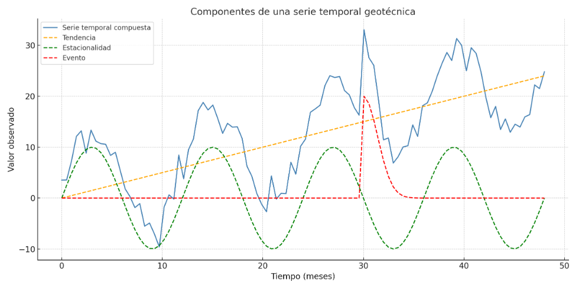
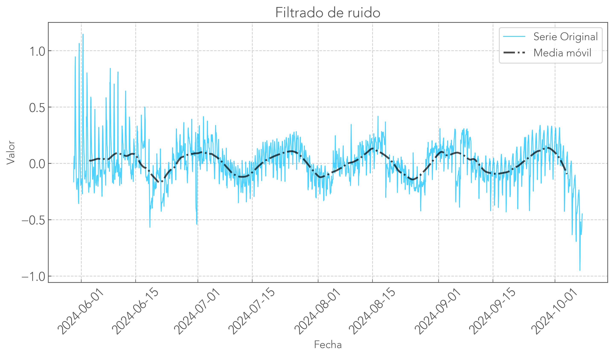
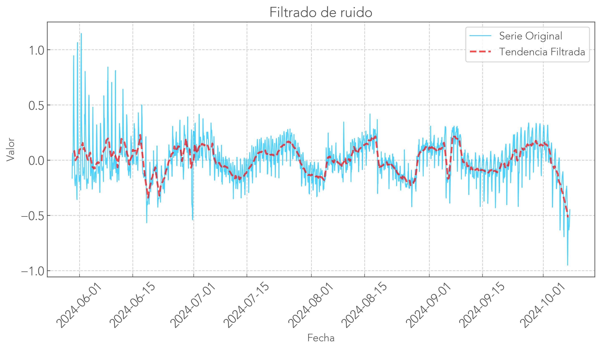
Muchos sensores geotécnicos (cuerda vibrante, galgas, extensómetros) son sensibles a los cambios térmicos diarios y estacionales.
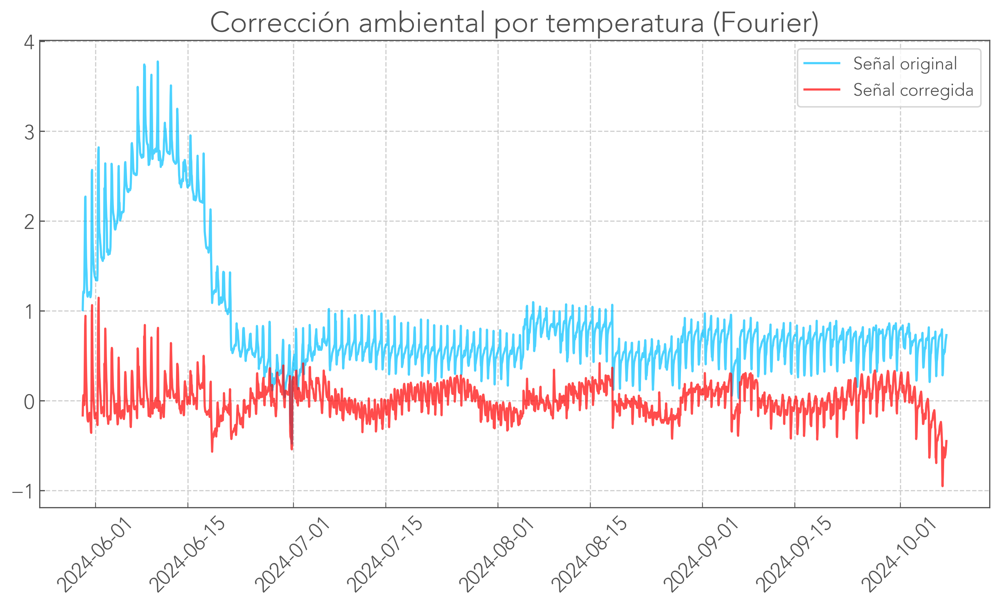
El análisis inicial permite entender el comportamiento, identificar anomalías y definir umbrales. La estadística es nuestra mejor aliada.
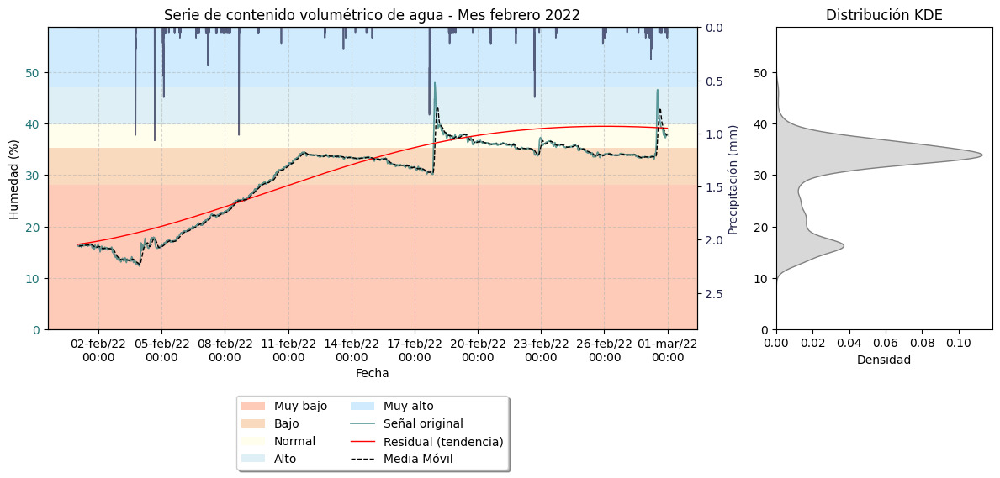
Una relación indica que dos variables cambian juntas, pero no necesariamente de forma proporcional o lineal. Puede ser visual, causal o indirecta.
Relación entre la precipitación media mensual del Valle de Aburrá y los movimientos en masa (1960-2018).
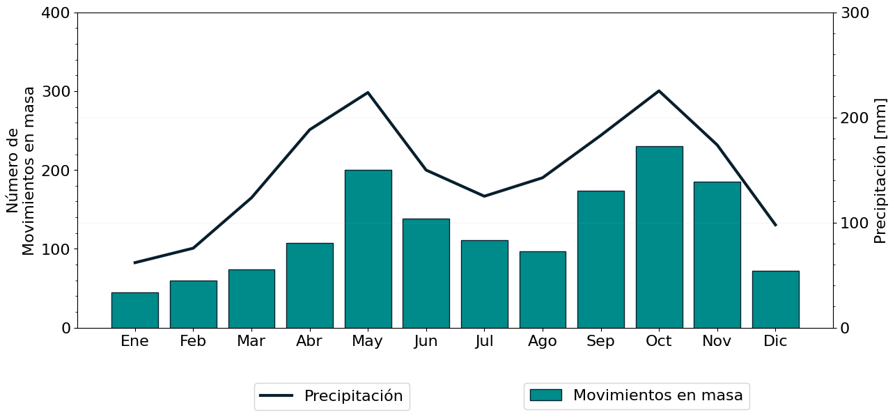
La correlación es una medida estadística que cuantifica la fuerza y dirección de una relación lineal entre dos variables. Se expresa con un coeficiente entre -1 y 1:
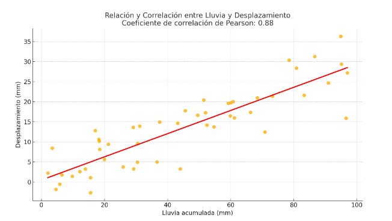
Integrar mapas con las variables medidas (presión de poros, desplazamiento, deformación) para visualizar áreas críticas. Siempre será necesario correlacionar variables e identificar patrones de comportamiento espaciales.
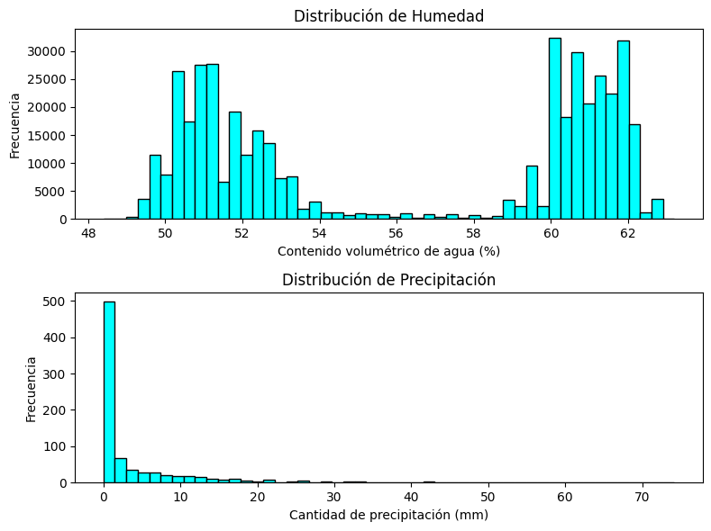
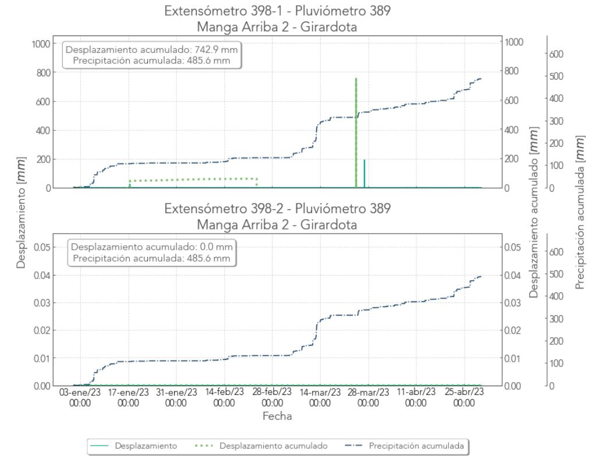
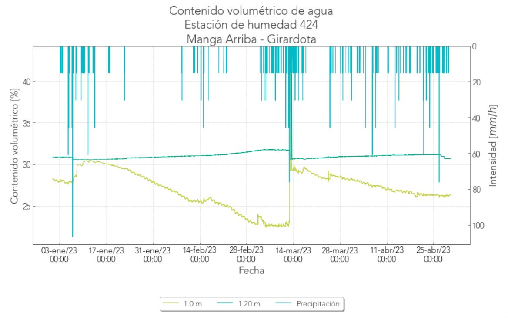
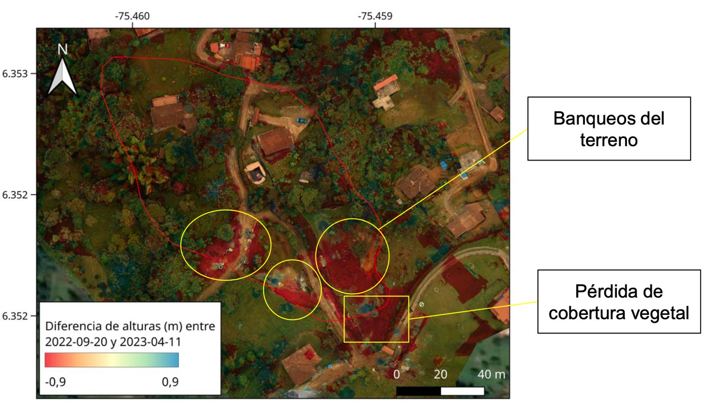
En el diseño geotécnico se desarrollan modelos que predicen el comportamiento de una estructura o terreno (por ejemplo, un modelo de deformaciones para un muro de contención o talud).
Estos modelos son cruciales para la interpretación de la instrumentación.
Presentar gráficos comparativos entre el comportamiento real medido y el esperado según el modelo teórico.
Límites críticos que indican la necesidad de acciones preventivas o correctivas. Son valores predefinidos que, cuando se superan, sugieren riesgo potencial de falla o daño en la estructura.
Permiten establecer niveles de alerta y actuar antes del colapso (ej. inclinación acercándose a umbral crítico activa mitigación).
Establecer valores límite para cada sensor (inclinómetros, piezómetros, etc.) que, si se superan, activan una alarma.
Protocolo de respuesta en caso de que las mediciones superen los límites: evacuación, refuerzo estructural o paralización de la obra.
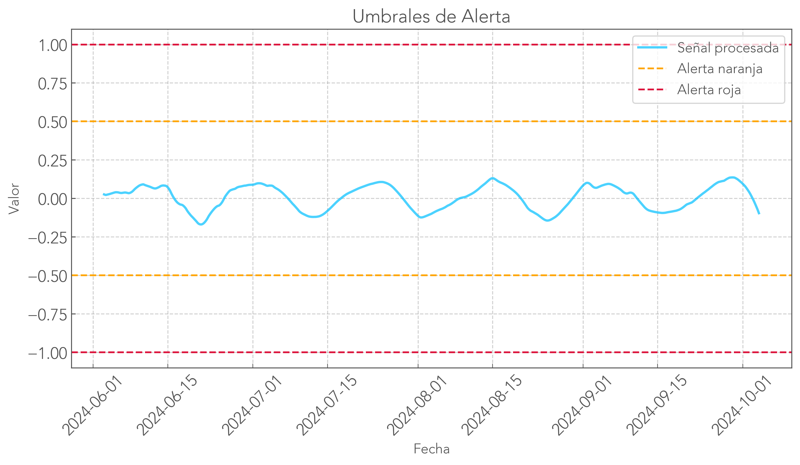
Basados en la observación y experiencia acumulada en proyectos anteriores. Se utilizan datos históricos de un sitio en particular para definir umbrales a partir del comportamiento de eventos pasados.
Estos enfoques se basan en modelos matemáticos o numéricos que simulan el comportamiento de la estructura en diferentes escenarios.
Se utilizan técnicas de simulación para determinar cómo una estructura responde a diferentes cargas o condiciones climáticas, permitiendo establecer umbrales de manera más precisa.
En algunos casos, los umbrales son establecidos por normativas y regulaciones locales o internacionales.
Estas normativas suelen indicar valores límite aceptables de deformación o presión en proyectos geotécnicos, basados en investigaciones previas y estudios a gran escala.
Los rangos admisibles son los límites dentro de los cuales las variables medidas por los sensores pueden fluctuar sin que esto represente un riesgo inmediato.
Fuera de estos rangos, la estructura puede comenzar a mostrar signos de inestabilidad o daño irreversible.
| 🟢 Normal | 🟡 Atención | 🟠 Alerta | 🔴 Alarma | |
|---|---|---|---|---|
| Condición (ejemplo) | Variables dentro del rango histórico | Superan el P90 o la lluvia acumulada supera el umbral bajo | Superan el P95, o hay velocidad creciente y sostenida | Umbral crítico superado y aceleración clara (1/v decrece) |
| Acción técnica | Monitoreo rutinario | Más frecuencia de lectura e inspección visual | Verificar en campo; preparar la evacuación | Ejecutar el plan de emergencia |
| Comunicación | Reportes periódicos | Aviso al equipo técnico | Aviso a autoridades y a la comunidad expuesta | Alarma directa (sirenas, mensajes, radio) |
| Revisión | Semanal | Diaria | Cada hora | Continua |
| Hubo falla | No hubo falla | |
|---|---|---|
| Se emitió alerta | ✅ Acierto | ❌ Falsa alarma |
| No se emitió | ⚠️ Alarma perdida | ✅ Normal correcto |
Un sensor supera un umbral y se genera la señal.
SistemaSe descartan errores de datos y se confirma con otras variables.
Equipo técnicoQuien tiene la responsabilidad autoriza el nivel de alerta.
AutoridadEl mensaje sale por varios canales y llega a la comunidad.
ComunicacionesLa comunidad y las entidades ejecutan el plan de respuesta.
ComunidadQué puede fallar, dónde y a quién afectaría.
Elige qué medir y en qué zona.
Meses de datos para saber qué es «normal».
Cada nivel con su condición y su acción.
Quién decide, quién avisa y cómo se responde.
Simulacros y validación con eventos pasados.
Calibración, limpieza, energía y comunicaciones con respaldo.
Se revisan tras cada evento, falsa alarma o cambio en el terreno.
Capacitación, simulacros periódicos y relevo de responsables.
Consolidación de objetivos, esquema de monitoreo, análisis temporal y espacial, propuesta de umbrales y conclusiones operativas.